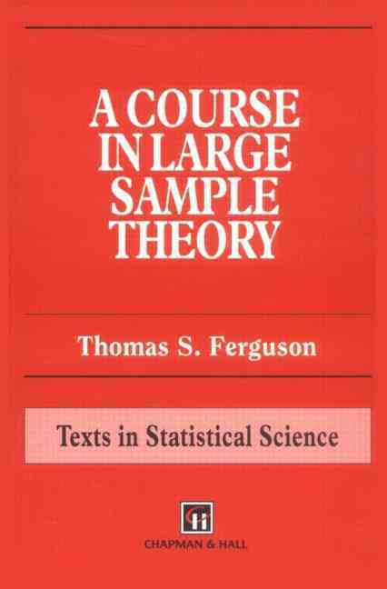

漸近論
A COURSE IN LARGE SAMPLE THEORY

著者：トーマス・S・ファーガソン
初版発行：1996年7月1日
Table of contents
Chapter1 : Modes of Convergence
Chapter2 : Partial Converses to Theorem 1
Chapter3 : Convergence in Law
Chapter4 : Laws of Large Numbers
Chapter5 : Central Limit Theorems(←今日の分)